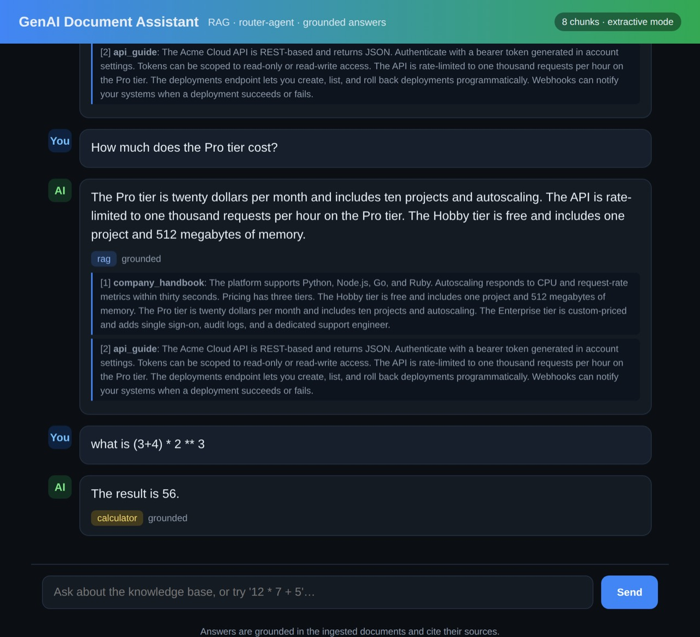

CASE STUDY / ALL SIX
GenAI Document Assistant (RAG)
Grounded, cited answers from your own documents, with an evaluation harness and a reader that abstains when evidence is missing.
- Repository
- riteshmamidi0905-lab/genai-doc-assistant
- Commit tested
daba676- Stack
- Python · FastAPI · SSE · Docker · pgvector option · pytest (sister engine: rag-doc-qa, 14 tests)
01 / THE PROBLEM
Why it exists
Document assistants that cannot cite, abstain or be scored cannot be trusted. The aim was a complete small system: ingestion, retrieval, a grounded reader with citations, a router for arithmetic, streaming, and an evaluation gated in CI.
02 / ARCHITECTURE
How it fits together
Choose a step to highlight the parts involved. Drawn from the project's own documentation; the list below the diagram carries the same information as text.
- deterministic code
- model / untrusted
- data store
- person
Sentence-aware overlapping chunks (about 480 characters) with a stateless hashing embedder, so everything runs offline.
Over-fetch by vector score, then blend with keyword overlap for better precision at k.
The extractive reader composes an answer from the retrieved sentences, attaches citations, and abstains when the context is insufficient.
Arithmetic goes to a restricted calculator rather than the model.
An evaluation harness reports hit rate, MRR, faithfulness and relevance with CI thresholds.
Text version of the architecture
- Chunk and embed. Sentence-aware overlapping chunks (about 480 characters) with a stateless hashing embedder, so everything runs offline.
- Retrieve, then re-rank. Over-fetch by vector score, then blend with keyword overlap for better precision at k.
- Read grounded, or abstain. The extractive reader composes an answer from the retrieved sentences, attaches citations, and abstains when the context is insufficient.
- Route arithmetic. Arithmetic goes to a restricted calculator rather than the model.
- Score it. An evaluation harness reports hit rate, MRR, faithfulness and relevance with CI thresholds.
03 / IMPLEMENTATION
What was built
- RAG pipeline: chunking, embeddings, vector store interface (in-memory, pgvector), retriever with re-ranking.
- Router agent; reader behind one interface with extractive, Gemini and OpenAI backends.
- Streaming responses over SSE; ingestion endpoint; Docker compose with Postgres/pgvector.
04 / ENGINEERING DECISIONS
Choices and trade-offs
- Extractive, abstaining reader as the default. Deterministic, offline, and incapable of inventing text outside the context.
- Hashing embedder for the default path. Stateless and free to run; real embedders plug in behind the same interface.
- Evaluation next to the code. Retrieval and answer quality are measured, not asserted.
05 / VERIFICATION
What I actually ran
Run on 2026-11-01 in clean scratch environments. Offline tests on synthetic or bundled data show the code behaves as tested; they do not show production readiness.
| pytest (41 tests collected; the optional sentence-transformers package was not installed) | 40 passed, 1 skipped (the optional embedding-model test) |
|---|---|
| python -m app.eval.run (backend/) | hit_rate 1.0 · mrr 1.0 · faithfulness 1.0 · relevance 0.581 on 8 items · EVAL PASSED (backends: hashing embedder, in-memory store) |

06 / RUN IT
Run it yourself
Copied from the project's own documentation (README.md, quick start (install lines) and the eval command it names, at commit daba676; the eval is run from backend/ as in the verification log). Offline extractive mode on the bundled sample corpus. Results are only those in the verification table above; running these on your machine may differ.
git clone https://github.com/riteshmamidi0905-lab/genai-doc-assistant.git
cd genai-doc-assistant
pip install -e "backend[dev]"
cd backend && python -m app.eval.run07 / LIMITATIONS
What this does not show
- The 8-item evaluation set is tiny; perfect retrieval scores on it say little about arbitrary documents.
- The verified run used hashing embeddings and the in-memory store; the pgvector path and real embedders were not exercised.
- Relevance 0.58 is the weakest number and is reported as such.
- The project README quotes older test counts (29 in the quick start, 39 in the file listing); the recorded run collected 41.
08 / BUSINESS RELEVANCE
Where it matters
Teams with policy, menu, supplier or HR documents need answers with sources, and need to know when the system should say it does not know.